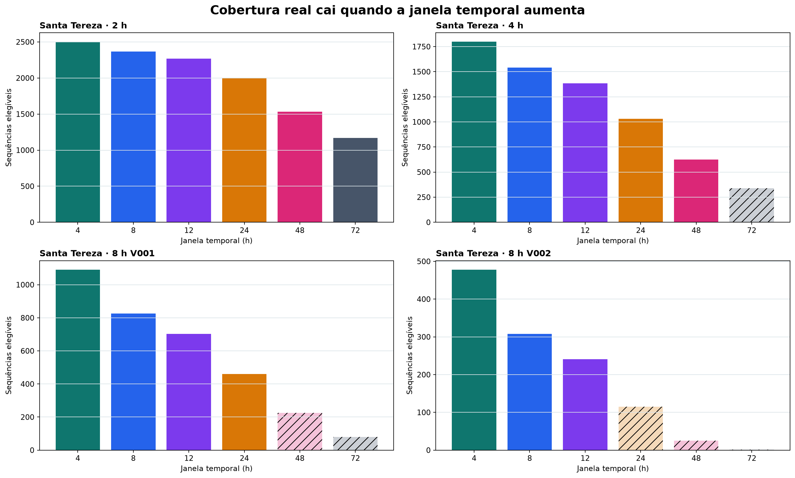
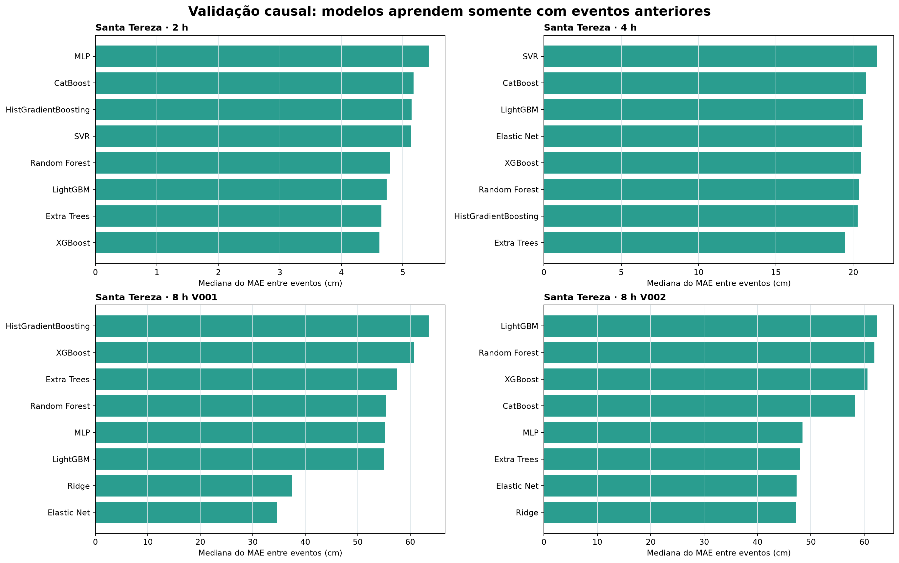
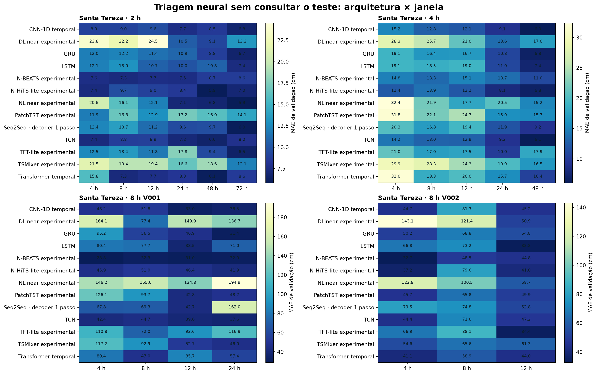
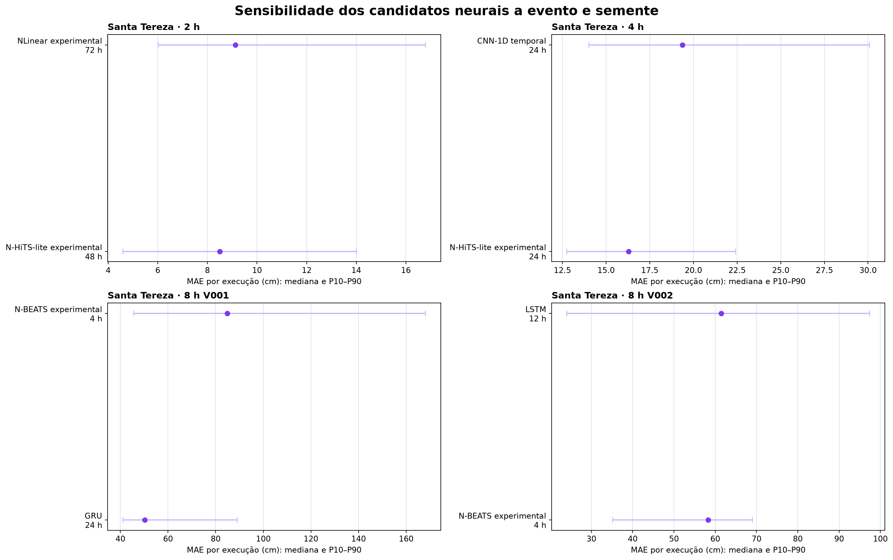
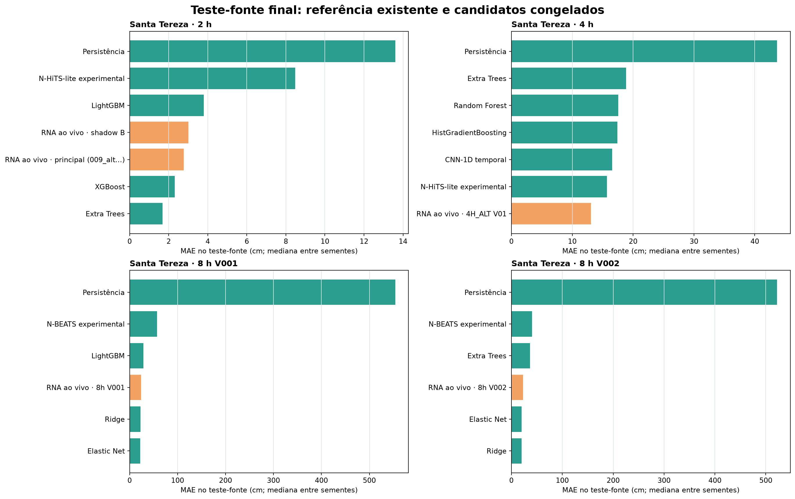

PREVINE · pesquisa experimental · Santa Tereza
Ainda não existe um vencedor universal — agora os modelos foram testados entre eventos e sementes
Segunda rodada da comparação de nível para +2 h, +4 h e +8 h. A seleção de janela e arquitetura usa validação; o teste-fonte é consultado somente depois que os candidatos são congelados.
Não é alerta nem modelo promovido. Este estudo não autoriza evacuação, despacho, rota, capacidade de abrigo ou substituição do robô atual.
Leitura executiva
Cobertura das janelas
Santa Tereza · 2 h6 de 6janelas sustentaram cobertura e ≥2 dobras causais; 6 passaram apenas na triagem
Santa Tereza · 4 h4 de 6janelas sustentaram cobertura e ≥2 dobras causais; 5 passaram apenas na triagem
Santa Tereza · 8 h V0014 de 6janelas sustentaram cobertura e ≥2 dobras causais; 4 passaram apenas na triagem
Santa Tereza · 8 h V0023 de 6janelas sustentaram cobertura e ≥2 dobras causais; 3 passaram apenas na triagem
Uma janela entra na triagem quando preserva pelo menos 200 sequências, 8 eventos e 8 eventos com no mínimo 8 previsões elegíveis. Para ser selecionável, também precisa sustentar ao menos duas dobras causais completas. A regra é pré-definida e não depende do erro obtido.
Modelos tabulares e boosting em eventos futuros
| Horizonte | Melhor tabular/boosting causal | MAE mediano | Pior evento | Skill vs persistência | Eventos/folds |
|---|---|---|---|---|---|
| Santa Tereza · 2 h | XGBoost | 4,62 cm | 14,69 cm | 76,6% | 12 |
| Santa Tereza · 4 h | Extra Trees | 19,47 cm | 34,22 cm | 57,5% | 13 |
| Santa Tereza · 8 h V001 | Elastic Net | 34,57 cm | 122,51 cm | 93,6% | 11 |
| Santa Tereza · 8 h V002 | Ridge | 47,23 cm | 63,36 cm | 88,7% | 4 |
Esta etapa usa uma coorte comum de quatro horas. As entradas continuam sendo somente colunas input_*; nenhuma saída futura, RNA_FINAL ou alvo observado entra como atributo.
Redes temporais escolhidas sem olhar o teste
| Horizonte | Seleção | Rede temporal | Janela | MAE validação | RMSE validação | Melhor época |
|---|---|---|---|---|---|---|
| Santa Tereza · 2 h | P1 | NLinear experimental | 72 h | 5,86 cm | 7,55 cm | 17 |
| Santa Tereza · 2 h | P2 | N-HiTS-lite experimental | 48 h | 5,94 cm | 9,93 cm | 22 |
| Santa Tereza · 4 h | P1 | N-HiTS-lite experimental | 24 h | 8,10 cm | 11,55 cm | 22 |
| Santa Tereza · 4 h | P2 | CNN-1D temporal | 24 h | 9,07 cm | 13,82 cm | 22 |
| Santa Tereza · 8 h V001 | P1 | N-BEATS experimental | 4 h | 28,80 cm | 40,19 cm | 17 |
| Santa Tereza · 8 h V001 | P2 | GRU | 24 h | 31,42 cm | 40,36 cm | 18 |
| Santa Tereza · 8 h V002 | P1 | N-BEATS experimental | 4 h | 32,66 cm | 40,30 cm | 15 |
| Santa Tereza · 8 h V002 | P2 | LSTM | 12 h | 33,84 cm | 51,47 cm | 1 |
A triagem compara CNN-1D, LSTM, GRU, TCN, Seq2Seq, Transformer temporal, DLinear, NLinear, TSMixer, N-BEATS, N-HiTS-lite, PatchTST e TFT-lite. Os nomes “experimental” e “lite” são mantidos porque são implementações de pesquisa compactas, não reproduções oficiais completas das bibliotecas dos artigos.
Robustez das redes selecionadas
| Horizonte | Candidato neural | Janela | Execuções | Eventos | Sementes | MAE mediano | P10 | P90 | Pior execução |
|---|---|---|---|---|---|---|---|---|---|
| Santa Tereza · 2 h | N-HiTS-lite experimental | 48 h | 15 | 3 | 5 | 8,50 cm | 4,59 cm | 14,01 cm | 15,84 cm |
| Santa Tereza · 2 h | NLinear experimental | 72 h | 15 | 3 | 5 | 9,13 cm | 6,01 cm | 16,79 cm | 24,26 cm |
| Santa Tereza · 4 h | N-HiTS-lite experimental | 24 h | 15 | 3 | 5 | 16,28 cm | 12,75 cm | 22,42 cm | 31,30 cm |
| Santa Tereza · 4 h | CNN-1D temporal | 24 h | 15 | 3 | 5 | 19,37 cm | 14,02 cm | 30,09 cm | 32,35 cm |
| Santa Tereza · 8 h V001 | GRU | 24 h | 15 | 3 | 5 | 50,27 cm | 40,99 cm | 89,16 cm | 94,37 cm |
| Santa Tereza · 8 h V001 | N-BEATS experimental | 4 h | 15 | 3 | 5 | 84,80 cm | 45,54 cm | 168,14 cm | 193,22 cm |
| Santa Tereza · 8 h V002 | N-BEATS experimental | 4 h | 15 | 3 | 5 | 58,30 cm | 35,15 cm | 69,05 cm | 76,49 cm |
| Santa Tereza · 8 h V002 | LSTM | 12 h | 10 | 2 | 5 | 61,47 cm | 24,05 cm | 97,38 cm | 101,57 cm |
Cada candidato selecionado é repetido nas três dobras causais mais recentes e em cinco sementes. A faixa P10–P90 representa variação entre execuções observadas, não um intervalo probabilístico operacional.
Teste-fonte final
| Horizonte | Modelo | Janela/coorte | Execuções | MAE | RMSE | Viés | NSE | Erro pico | Atraso |pico| |
|---|---|---|---|---|---|---|---|---|---|
| Santa Tereza · 2 h | Extra Trees | 48 h | 1 | 1,68 cm | 2,64 cm | -0,79 cm | 0,989 | 0,94 cm | 0,0 h |
| Santa Tereza · 2 h | XGBoost | 48 h | 1 | 2,30 cm | 3,07 cm | -0,04 cm | 0,984 | 3,49 cm | 0,0 h |
| Santa Tereza · 2 h | RNA ao vivo · principal (009_alt...) | 48 h | 1 | 2,76 cm | 3,58 cm | 0,40 cm | 0,979 | 5,66 cm | 0,0 h |
| Santa Tereza · 2 h | RNA ao vivo · shadow B | 48 h | 1 | 3,01 cm | 3,65 cm | 1,25 cm | 0,978 | 6,12 cm | 0,0 h |
| Santa Tereza · 2 h | LightGBM | 48 h | 1 | 3,80 cm | 5,45 cm | -1,34 cm | 0,951 | 4,67 cm | 0,0 h |
| Santa Tereza · 2 h | N-HiTS-lite experimental | 48 h | 5 | 8,48 cm | 11,29 cm | 0,10 cm | 0,790 | 12,30 cm | 0,5 h |
| Santa Tereza · 2 h | Persistência | 48 h | 1 | 13,60 cm | 18,12 cm | -1,87 cm | 0,459 | 2,50 cm | 1,0 h |
| Santa Tereza · 4 h | RNA ao vivo · 4H_ALT V01 | 24 h | 1 | 13,07 cm | 22,19 cm | -0,76 cm | 0,993 | 19,67 cm | 2,0 h |
| Santa Tereza · 4 h | N-HiTS-lite experimental | 24 h | 5 | 15,70 cm | 26,57 cm | -5,82 cm | 0,989 | 9,53 cm | 1,0 h |
| Santa Tereza · 4 h | CNN-1D temporal | 24 h | 5 | 16,53 cm | 26,12 cm | -3,14 cm | 0,990 | 7,34 cm | 1,0 h |
| Santa Tereza · 4 h | HistGradientBoosting | 24 h | 1 | 17,42 cm | 33,63 cm | -8,02 cm | 0,983 | 17,55 cm | 2,0 h |
| Santa Tereza · 4 h | Random Forest | 24 h | 1 | 17,58 cm | 33,31 cm | -10,98 cm | 0,983 | 28,96 cm | 1,0 h |
| Santa Tereza · 4 h | Extra Trees | 24 h | 1 | 18,84 cm | 36,80 cm | -12,78 cm | 0,980 | 55,99 cm | 1,0 h |
| Santa Tereza · 4 h | Persistência | 24 h | 1 | 43,65 cm | 71,91 cm | -0,39 cm | 0,923 | 0,00 cm | 4,0 h |
| Santa Tereza · 8 h V001 | Elastic Net | 4 h | 1 | 22,01 cm | 34,37 cm | 8,09 cm | 0,926 | 28,04 cm | 0,0 h |
| Santa Tereza · 8 h V001 | Ridge | 4 h | 1 | 22,93 cm | 35,36 cm | 8,39 cm | 0,922 | 29,82 cm | 0,0 h |
| Santa Tereza · 8 h V001 | RNA ao vivo · 8h V001 | 4 h | 1 | 23,80 cm | 34,06 cm | -9,68 cm | 0,927 | 118,96 cm | 0,0 h |
| Santa Tereza · 8 h V001 | LightGBM | 4 h | 1 | 28,73 cm | 49,19 cm | 2,30 cm | 0,848 | 133,92 cm | 7,0 h |
| Santa Tereza · 8 h V001 | N-BEATS experimental | 4 h | 5 | 57,17 cm | 79,27 cm | 22,40 cm | 0,606 | 53,32 cm | 0,0 h |
| Santa Tereza · 8 h V001 | Persistência | 4 h | 1 | 553,97 cm | 597,05 cm | 553,97 cm | -21,326 | 737,00 cm | 17,0 h |
| Santa Tereza · 8 h V002 | Ridge | 4 h | 1 | 19,74 cm | 29,88 cm | 3,94 cm | 0,788 | 72,68 cm | 12,0 h |
| Santa Tereza · 8 h V002 | Elastic Net | 4 h | 1 | 19,78 cm | 29,34 cm | 2,33 cm | 0,796 | 69,31 cm | 12,0 h |
| Santa Tereza · 8 h V002 | RNA ao vivo · 8h V002 | 4 h | 1 | 22,87 cm | 37,00 cm | -3,73 cm | 0,676 | 96,46 cm | 0,0 h |
| Santa Tereza · 8 h V002 | Extra Trees | 4 h | 1 | 36,36 cm | 57,17 cm | 13,22 cm | 0,226 | 149,22 cm | 0,0 h |
| Santa Tereza · 8 h V002 | N-BEATS experimental | 4 h | 5 | 40,73 cm | 56,81 cm | 24,58 cm | 0,235 | 151,93 cm | 12,0 h |
| Santa Tereza · 8 h V002 | Persistência | 4 h | 1 | 522,04 cm | 537,22 cm | 522,04 cm | -67,380 | 581,00 cm | 20,0 h |
A comparação com a RNA existente fica restrita ao teste definido nos próprios workbooks. Em contratos cujo teste contém um único evento, o resultado continua sendo evidência limitada — mesmo quando o erro é pequeno.





Como o experimento evita conclusões artificiais
- Eventos completos, e não linhas aleatórias, definem treino, validação e teste.
- Nas dobras causais, nenhum evento posterior é usado para prever um evento anterior.
- Normalização é ajustada somente no treino de cada execução.
- Arquitetura e janela são classificadas pela validação, não pelo teste-fonte.
- Persistência permanece como baseline obrigatório.
- MAE, RMSE, NSE, viés, erro do pico e erro de horário do pico permanecem juntos; nenhum R² isolado decide promoção.
- GNN e Transformer-GNN continuam fora desta rodada até existir um grafo hidrológico auditado de nós, arestas, direção, distância fluvial e tempo de propagação.
Limites que permanecem
- As implementações neurais novas são provas de conceito compactas e precisam de confirmação em uma biblioteca de referência antes de qualquer promoção.
- A RNA atual não foi re-treinada em cada dobra causal; compará-la ali inventaria uma equivalência que não existe.
- Os contratos V001 e V002 de 8 h têm cobertura e features diferentes e não devem ser somados como se fossem uma única amostra.
- O estudo prevê nível; não valida mancha, profundidade por célula, HAND, rota ou decisão operacional.